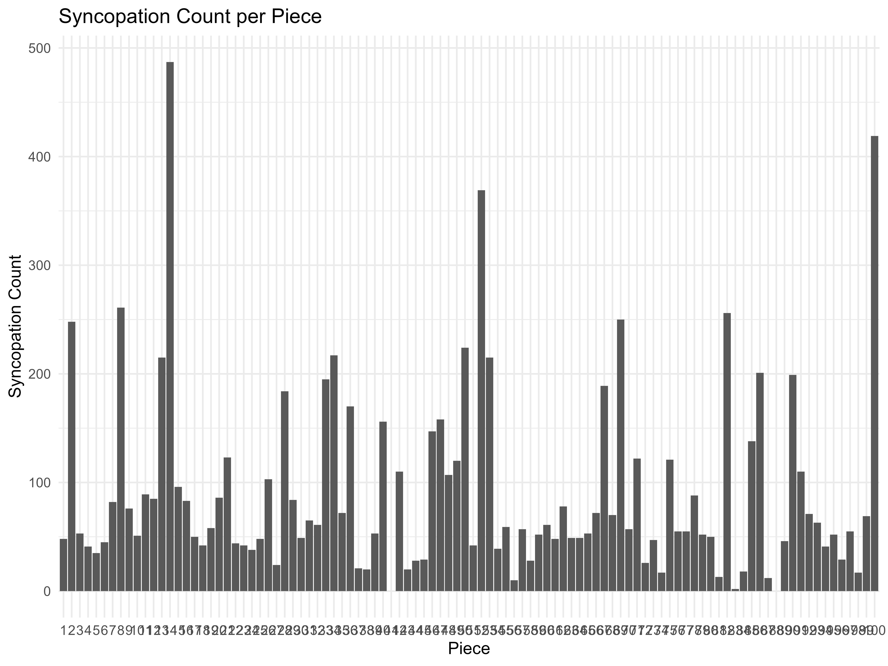
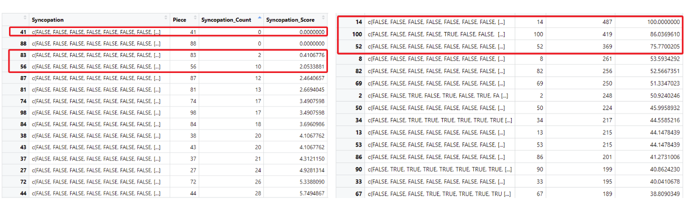
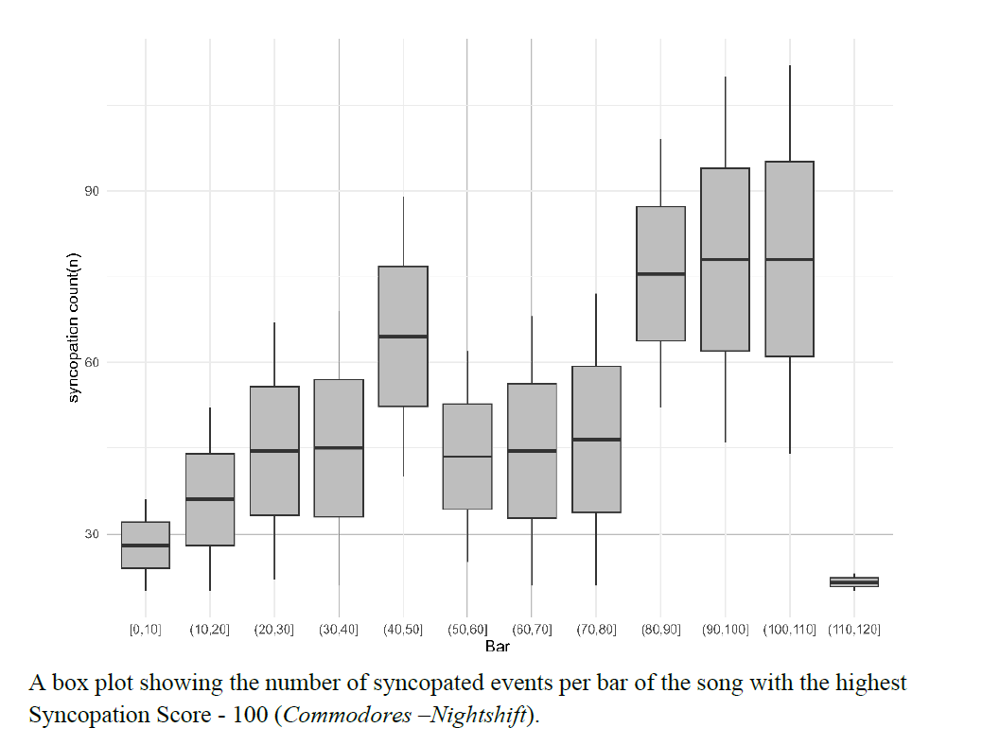
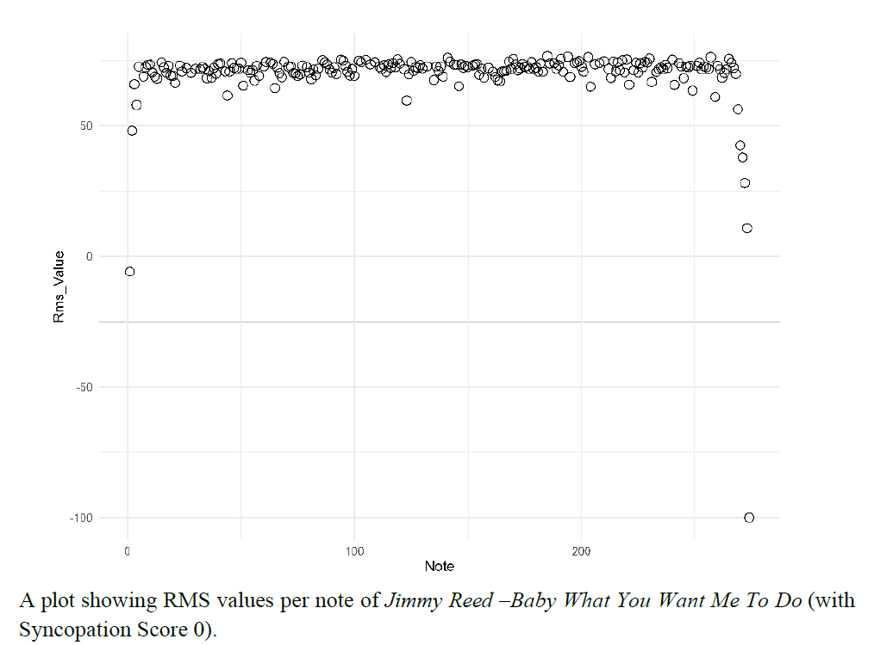
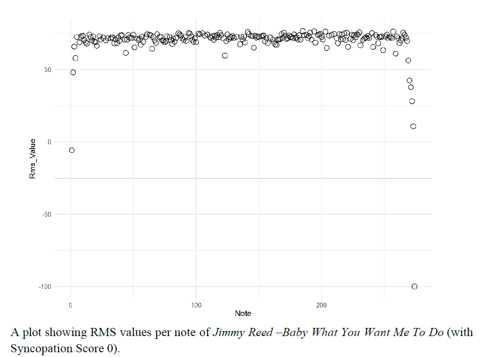
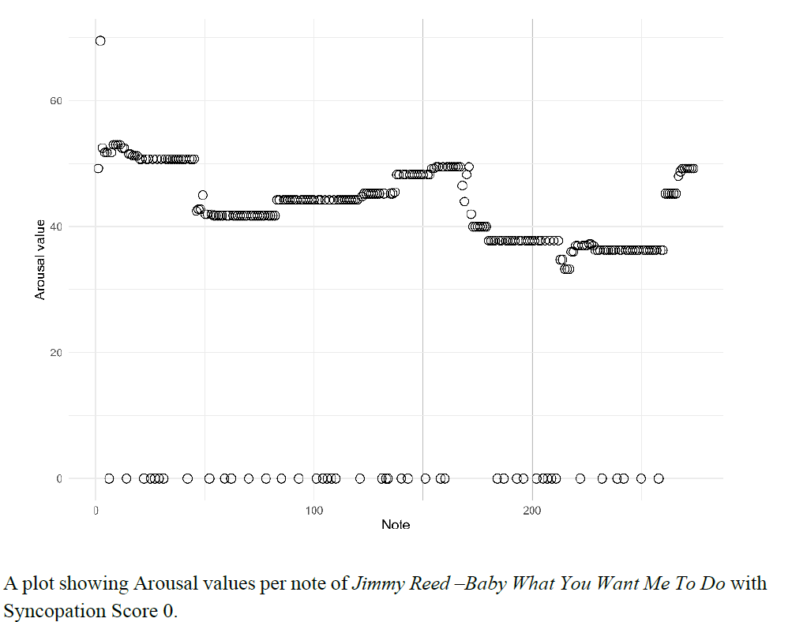
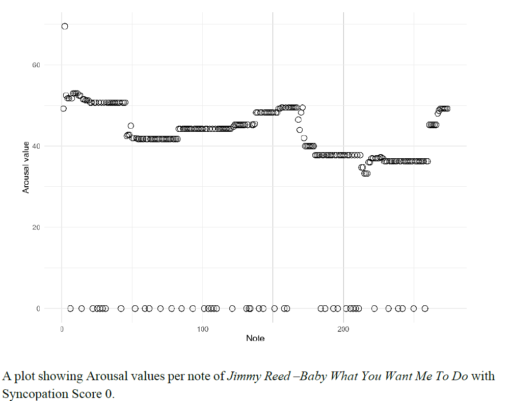

Exploring the Influence of Syncopation and Loudness on Listener Arousal in Music¶
Examine the individual and combined effects of syncopation and loudness on listener-reported arousal
Introduction¶
Music is a powerful tool for evoking emotions, capable of influencing mood, physiological states, and even behavior. Arousal, one of the primary dimensions of emotional response, reflects the intensity or energy level of an experience and is shaped by various musical features. Understanding the mechanisms behind arousal in music not only deepens our comprehension of human emotional processing but also has practical applications in fields such as music therapy, entertainment, and artificial intelligence-driven music composition. In this research, using syncopation and loudness to analyze arousal.
-
Syncopation: Syncopation, marked by rhythmic irregularities and disruptions of expected patterns, evokes excitement and emotional tension by challenging the listener's predictive models (Huron & Ommen, 2006; Tan et al., 2019). Its impact on arousal depends on context and familiarity, with moderate syncopation often bringing more enjoyment than very low or high levels, supporting optimal complexity theories (Gómez et al., 2005).
-
Loudness： Loudness, measured by RMS levels, strongly influences arousal, with louder music perceived as more intense and engaging, triggering heightened physiological and emotional responses (Hosken et al., 2021). Unlike syncopation, it serves as a direct cue, consistently correlating with arousal across styles and listeners.
Research Question and Hypothesis¶
Question¶
- Does higher syncopation evoke greater arousal in listeners?
- Does increased loudness correlate with higher arousal levels?
Hypothesis¶
- More syncopation within vocal parts evokes higher levels of arousal in listeners.
- Higher RMS levels (representing loudness) lead to increased levels of arousal.
Method¶
Datasets¶
-
-
Filter
*.varms.hum:
Installation¶
- Prerequsites


- HumdrumR Installation
install.packages('devtools') devtools::install_github("Computational-Cognitive-Musicology-Lab/humdrumR") git clone https://github.com/Computational-Cognitive-Musicology-Lab/humdrumR devtools::install() library(humdrumR)
Key Features¶
🎶 Syncopation Score - A measure of rhythmic complexity - Calculated as the normalized count of syncopations within vocal parts for each piece
🔊 RMS Score
- Represents loudness
- Computed as the average RMS value extracted from the **rms spine of each piece.
😊⚡ Arousal Score
- An overall mean value of each piece derived from listener-reported arousal levels in the **arousal spine.
🎶🔊Combined RMS and Syncopation Score - A composite score that integrates both RMS and syncopation metrics.
Procedure¶
- Load library
library(humdrumR) library(ggplot2) library(dplyr) library(tidyr) - Load Files
readHumdrum('./.*hum')->Cocopops - Calculating Syncopation Scores
-
Analyze the syncopation of each piece. First, obtain the duration of each piece and convert them into numerical values. Group the data according to the "Piece".
dur_values <- Cocopops|> group_by(Piece) |> mutate(Duration = as.numeric(as.character(duration(Token)))) |> ungroup() -
Using “syncopation(dur, meter = duple(5), levels = “all”, groupby = list())” in HumdrumR to access songs in 4/4 time and obtain syncopations. The result is true and flase. True represents syncopations, and flase does not.
Synco <- dur_values |> group_by(Piece) |> summarise(Syncopation = list(syncopation(Duration, meter = duple(5), levels = "all", groupby = list()))) -
Calculate the number of “true” in each piece, that is, the number of syncopations, and use “geom_col” in “ggplot” to plot a bar chart about piece and Syncopation_Count.
results <- Synco |> mutate(Syncopation_Count = sapply(Syncopation, function(x) sum(x))) ggplot(results, aes(x = as.factor(Piece), y = Syncopation_Count)) + geom_col() + labs(title = "Syncopation Count per Piece", x = "Piece", y = "Syncopation Count") + theme_minimal() ggsave("plot.jpg", width = 8, height = 6, dpi = 800) -
Syncopation score for each piece is calculated by taking the Syncopation_Count statistics for all 100 pieces, arranging all the data from smallest to largest, and normalizing to [0,100] to obtain the corresponding score, and make all Syncopation_Score as scatter plots.
min_valueS <- min(results$Syncopation_Count) max_valueS <- max(results$Syncopation_Count) S_Score_list <- results |> mutate(Syncopation_Score = (results$Syncopation_Count - min_valueS) / (max_valueS - min_valueS) * 100) print(S_Score_list$Syncopation_Score) ggplot(S_Score_list, aes(x = Piece, y = Syncopation_Score)) + geom_point(color = "black", size = 3) + labs( x = "Piece", y = "Syncopation Score", title = "Syncopation Score by Piece" ) ggsave("Syncopation Score.png", width = 8, height = 6, dpi = 800)
-
Calculating RMS Scores
- Design a function (RMS)that calculates the average of the total rms value of all rows in each song.First, the data in the **rms spine of the corpus is filtered, and the remaining spine is removed, grouping
each piece. Second,Convert humdrum format to data.frame. Load all rms values into col1 and ensure that all data is numeric. Calculate the average of all values in col1, which is the average rms value of the
piece.
RMS<- function(data) { data |> filter(Exclusive == "rms") |> group_by(Piece, Bar) |> removeEmptySpines() |> as.data.frame() |> separate(V1, into = "Col1", sep = " ") |> mutate(Col1 = as.numeric(Col1)) |> summarise(mean_col1 = mean(Col1, na.rm = TRUE)) |> ungroup() } - Iterate 100 pieces and calculate the rms mean value of all the songs.(Because using “as.data.frame” to calculate the mean causes the “group_by(Piece,Bar)” function in HumdrumR to be broken, if the input is
the entire Cocopops corpus, the result is the unique mean of all pieces and all phrases.) Extract the rms average of all pieces and write them to a list, convert to a data frame, and finally visualize them.
RMS_list<- list() for (i in 1:100) { RMS_result <- RMS(Cocopops[i]) RMS_list[[i]] <- RMS_result$mean_col1 } mean_col1_list <- lapply(RMS_list, function(x) as.numeric(x)) # Convert to data frame mean_col1_df <- data.frame(mean_col1 = unlist(mean_col1_list)) # View results and visualization print(mean_col1_df ) ggplot(mean_col1_df, aes(x = seq_along(mean_col1), y = mean_col1)) + geom_point(size = 2, color = "black") labs( x = "Piece", y = "RMSValue", title = "RMSValue by Piece" ) + theme_minimal() ggsave("RMSValue.png", width = 8, height = 6, dpi = 800) -
For subsequent correlation analysis, we also normalized the average rms value of all pieces from small to large to 0-100 as the rms score of each song and visualize them.
min_value_means_col1 <- min(mean_col1_df$mean_col1) max_value_means_col1 <- max(mean_col1_df$mean_col1) Rms_Score = (mean_col1_df$mean_col1- min_value_means_col1) / (max_value_means_col1 - min_value_means_col1) * 100 Rms_Score_df <- data.frame(Piece = seq_along(Rms_Score), Rms_Score = Rms_Score) ggplot(Rms_Score_df, aes(x = Piece, y = Rms_Score)) + geom_point(size = 3, color = "black") + labs( x = "Piece", y = "RMS Score", title = "RMS Score Plot" ) + theme_minimal() ggsave("RMS Score.png", width = 8, height = 6, dpi = 800)
-
Calculating Arousal Score of each piece
- Design a function (AROUSAL)that calculates the average of the total arousal value of each piece. Since the arousal values come from four people, but in the corpus the four values are in one column, the average score for each phrase cannot be calculated. Therefore,
the **.hum file must first be converted into a data frame, and then the data of one column from four people into four columns of data from one person, so that the average of the four columns of data can be calculated as the arousal value of each musical phrase
of a piece. Admittedly, participants did not give scores to some musical phrases, so all “None” were changed to 0.Finally, the arousal value of each musical phrase was summed and then averaged to be used as the arousal value of the entire piece.
AROUSAL <- function(data) { average_result <- data |> filter(Exclusive == "arousal") |> group_by(Piece, Bar) |> removeEmptySpines() |> as.data.frame() |> separate(V1, into = c("Col1", "Col2", "Col3", "Col4"), sep = " ") |> mutate(across(starts_with("Col"), ~ replace_na(as.numeric(.), 0))) |> # Replace NA with 0 rowwise() |> mutate(row_mean = mean(c_across(starts_with("Col")), na.rm = TRUE)) |> # Calculate the average of the rows ungroup() overall_mean <- average_result |> summarise(overall_row_mean = mean(row_mean, na.rm = TRUE)) # Calculate the overall average return(list(average_result = average_result, overall_mean = overall_mean)) } - Iterate 100 pieces and calculate the arousal mean value of all the pieces.(Because using “as.data.frame” to calculate the mean causes the “group_by(Piece,Bar)” function in HumdrumR to be broken, if the input is the entire Cocopops corpus, the result is the unique
mean of all pieces and all phrases.)
AROUSAL_list <- list() for (i in 1:100) { AROUSAL_result <- AROUSAL(Cocopops[i]) AROUSAL_list[[i]] <- AROUSAL_result$overall_mean } - Extract the average arousal value(overall_row_mean) of all pieces and write them to a list, convert to a data frame, and finally visualize them.
overall_mean_list <- lapply(AROUSAL_list, function(x) as.numeric(x$overall_row_mean)) overall_mean_df <- data.frame(overall_mean = unlist(overall_mean_list)) print(overall_mean_df) ggplot(overall_mean_df, aes(x = seq_along(overall_mean), y = overall_mean)) + geom_point(color = "blue", size = 3) + labs(x = "Index", y = "Overall Mean", title = "Scatter Plot of Arousal Value") + theme_minimal() - For subsequent correlation analysis, we also normalized the average arousal value(overall mean) of all pieces from small to large to 0-100 as the arousal score of each song and visualize them.
min_valueA <- min(overall_mean_df$overall_mean) max_valueA <- max(overall_mean_df$overall_mean) A_Score_list <- overall_mean_df |> mutate(Arousal_Score = (overall_mean_df$overall_mean - min_valueA) / (max_valueA - min_valueA) * 100) print(A_Score_list$Arousal_Score) ggplot(A_Score_list, aes(x = seq_along(Arousal_Score), y = Arousal_Score)) + geom_point(size = 3, color = "black") + labs( x = "Piece", y = "Arousal Score", title = "Arousal Score Per Piece" ) + theme_minimal() ggsave("Arousal Score.png", width = 8, height = 6, dpi = 800)
Results¶
The correlation between syncopation score and arousal score¶

We employed a multiple linear regression model to examine the relationship between the Syncopation score and the Arousal score. The analysis revealed a negative relationship (coefficient = -0.1626, p = 0.1711), with minimal variance explained (R² = 0.01903), which suggests that as the syncopation score increases, the arousal score tends to decrease, contrary to hypothesis.
The correlation between RMS score and arousal score¶

RMS scores positively correlated with arousal (coefficient = 0.7341, p = 0.000719). The positive slope in the multiple linear regression model (Fig. 6) indicates that as RMS score increases, arousal score also increases, supporting our hypothesis. Although the coefficient between RMS Score and arousal score is greater than 0, the R² value is only 0.1107, which means that the relationship between the two is not convincing.
Combined Analysis¶

While examining the relationships between our variables, we created a new combined variable integrating the Syncopation and RMS scores to assess its correlation with the Arousal Score. Based on the syncopation coefficient of -0.1487 and the RMS coefficient of -0.7242, the overall coefficient is still greater than 0, and the relationship between the independent variable and the dependent variable is still positively correlated. Compared to the effect of the RMS score on the arousal score alone, the R-squared increases to 0.1266, which means that after combining the syncopation score, the variable factors that affect the arousal score are more convincing.
Comparative Analysis¶
 To explore the relationships between syncopation, RMS values, and arousal levels, we conducted a comparative analysis focusing on selected pieces from the corpus. Specifically, we examined two pieces with extreme syncopation scores: one with the highest syncopation score of 100 (Commodores – Nightshift) and another with the lowest score of 0 (Jimmy Reed - Baby What You Want Me To Do). For additional context, we also analyzed other pieces with notable syncopation and RMS scores.
Syncopation Analysis¶
 
The height of the box plot for each measure represents the proportion of the syncopation count to the total number of notes in the entire measure. When the box plot appears, the higher the height, the smaller the proportion of the syncopation count in the measure. Conversely, the lower the height, the higher the proportion of the syncopation counts in the measure. When the piece does not contain syncopation, no box plot will be displayed, and only the number of non-syncopation notes will be displayed. In Nightshift, syncopation exhibits significant variability, with a range spanning 30 to 100 events per measure. This variability is reflected in the dynamic changes in rhythm, as evidenced by the fluctuating box sizes in the visualization. The larger the number of syncopations of the piece, the greater the variability of different box heights, indicating frequent shifts in rhythmic structure. Conversely, Exploring the Influence of Syncopation and Loudness on Listener Arousal in Music syncopation function in HumdrumR has not detected any syncopated events in the vocal part of Baby What You Want Me To Do, as shown by the absence of boxes in its visualization.
RMS Analysis¶
 

The RMS values per note reveal that in Nightshift, RMS fluctuates between 60 and 80 with considerable instability, while in Baby What You Want Me To Do, RMS values remain relatively stable, fluctuating between 50 and 60.Although higher syncopation often coincides with concentrated RMS values, there is no direct dependence between the magnitude of RMS and the number of syncopations, as RMS consistently remains within the 50–75 range across all analyzed pieces.
Arousal Analysis¶
 

In Nightshift, the high number of syncopations correlates with significant fluctuations in participant-reported arousal levels, indicating a varied emotional response. In contrast, Baby What You Want Me To Do exhibits stable arousal values with minimal fluctuation, consistent with its lack of syncopation.
Other Pieces Analysis¶

As for other pieces we select, explaining the relationship between the arousal value and syncopation count, certain pieces (Piece 52 and Piece 56) show a positive relation-ship between syncopation and arousal fluctuations, others (Piece 100 and Piece 83) do not. This inconsistency may explain the weak overall correlation observed between syncopation and arousal scores across the corpus. For explaining the relationship be-tween RMS value and arousal value, no definitive relationship emerged between RMS values and arousal at the individual note level. This suggests the need to consider additional factors, such as harmonic complexity or lyrical content, to holistically understand arousal.
Limitation and Implication¶
This analysis focused exclusively on vocal parts, excluding instrumental syncopation, which may have contributed additional rhythmic complexity. Furthermore, the dataset was limited to 100 pieces, potentially restricting the generalizability of the findings to broader musical contexts.
The results highlight the importance of considering multiple interacting variables in understanding musical arousal. While RMS appears to dominate as a predictor, syncopation may serve as an auxiliary feature that interacts with other musical elements to produce nuanced emotional effects. Future research could explore these interactions using larger and more diverse datasets, as well as experimental designs that manipulate syncopation and loudness simultaneously. From an application perspective, understanding the combined effects of RMS and syncopation could inform the design of more emotionally engaging music in therapeutic, entertainment, or AI-driven music composition contexts. For instance, adaptive music systems could dynamically adjust both loudness and rhythmic complexity to evoke desired emotional responses in listeners.
Team¶
| Name | Seniority | Major | Department | Contribution |
|---|---|---|---|---|
| Changda Ma | Masters | Architecture | ARCH | musical symbolical analysis and visualization |
| Alexey Voronin | Masters | Music technology | MUSI | music theory concept |